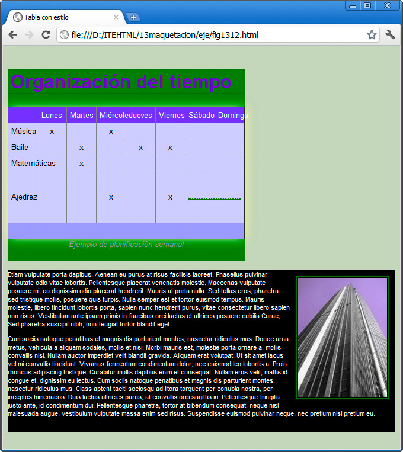
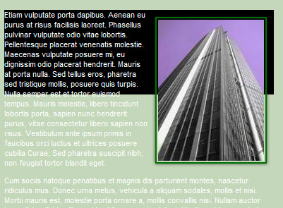
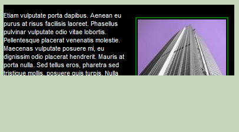
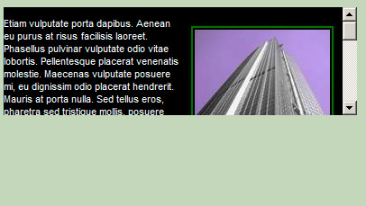

Cada elemento HTML de una página web cuenta con una anchura y una altura específica. En muchos casos esas dimensiones se las proporciona el propio contenido, como en un párrafo o una imagen, por ejemplo. Esos valores de anchura (width) y de altura (height) pueden ser modificados mediante las hojas de estilo, gracias a las propiedades del mismo nombre.
Así podemos hacer párrafos más estrechos, imágenes que se sobredimensionen o simplemente ajustar diferentes bloques, para que se acomoden correctamente en la pantalla.
Los valores width y height se acompañan de un valor numérico exacto o de un porcentaje, como en otras muchas propiedades.
Observa el ejemplo de la figura:

Hemos dividido los contenidos de la página en dos grandes bloques mediante sendas etiquetas <div>, quedando así la página:
<!DOCTYPE html>
<html>
<head>
<meta http-equiv="content-type" content="text/html; charset=UTF-8">
<title>Tabla con estilo</title>
<link href="general.css" rel="stylesheet" type="text/css">
</head><body>
<div id="bloqueprincipal">
<h1>Organización del tiempo</h1>
[Tabla de días de la semana]
</div><div id="bloquelateral">
<p><img id="imgbuilding" alt="" src="resources/buildingsmall.jpg">
[Texto de ejemplo en latín.]</p>
</div></body>
</html>
Y en la hoja de estilos hemos incorporado las propiedades de los dos <div>.
#bloqueprincipal {
width: 400px;
background-color: rgb(0, 126, 0);
}
#bloquelateral {
background-color: rgb(0, 0, 0);
font-family: Arial, Helvetica, sans-serif;
font-size: 0.7em;
color: rgb(255, 255, 255);
width: 100%
}
Nuestro objetivo al cambiar el color del fondo es que se destaque el efecto que se produce al cambiar el tamaño de cada <div>. Si probamos a redimensionar la pantalla, el primer bloque mantendrá constante su tamaño, mientras que el segundo siempre ocupará el 100% del ancho de la pantalla.
Actividad 6
Hay mucho que experimentar aquí. Probaremos a crear dos bloques similares a los del ejemplo y comprobar lo que sucede al indicar valores relativos como el 50% o valores fijos menores.
Con las alturas sucederá lo mismo. Podemos indicar valores porcentuales o exactos.
Controlando el contenido
Al igual que sucede con la anchura, si el contenido no cabe dentro del bloque, lo rebasará quedando fuera del mismo, como se muestra en la figura:

En este caso el estilo del bloque llamado #bloquelateral ha quedado así:
#bloquelateral {
width:30%;
height: 120px;
}
Contamos con una propiedad denominada overflow (y otras dos llamadas overflow-x y overflow-y) que se emplean para evitar que el contenido salga de su caja correspondiente.
Los valores que toma esta propiedad son:
- visible: hará que se omita la propiedad de anchura o altura y la caja se ampliará hasta cubrir todo el contenido.
- hidden: el contenido que no cabe en la caja se ocultará.
- scroll: se añadirá una barra de desplazamiento, para poder desplazarse dentro de la caja.
- auto: dejaremos en manos del navegador la decisión, que optará por la más apropiada.
La figura muestra de nuevo ese bloque con una propiedad overflow añadida:
#bloquelateral {
width:30%;
height: 120px;
overflow:hidden;
}

Y así se vería con la propiedad overflow-y:scroll;

Alto y ancho mínimo y máximo
Para completar el control del tamaño de las cajas podemos emplear las propiedades min-width, max-width, min-height y max-height. Respectivamente controlan el ancho mínimo, el máximo, el alto mínimo y el máximo de cualquier elemento HTML que incorporemos a una página web.
Con ellas conseguiremos que el elemento en cuestión nunca supere los límites establecidos.
La propiedad overflow nos será de gran ayuda para controlar lo que debe hacer el navegador cuando un contenido supera esos valores.
Pregunta de Elección Múltiple
|
Que se omita la propiedad de anchura o altura y la caja se ampliará hasta cubrir todo el contenido.
| |
|
El contenido que no cabe en la caja se ocultará.
| |
|
Se añadirá una barra de desplazamiento, para poder desplazarse dentro de la caja.
| |
|
Dejará en manos del navegador la decisión, que optará por la más apropiada.
|